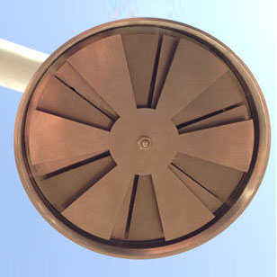

Atmospheric Electric Field Instrumentation on Lightning Warning System

Powerful lightning currents generated by lightning, hot temperatures and strong electromagnetic radiation effect on the national economy caused a lot of harm. Such as the formation of forest fires, causing oil depot explosion, destroying high voltage transmission lines, affecting radio communication, causing flight accidents, and damage to buildings caused by human and animal casualties and so on. Hence, lightning activity over the years has been the concern and attention.
Establish an effective lightning monitoring and warning system and the corresponding warning and forecast method research to reduce the loss of life and property lightning caused great significance.
- Introduction -
JSZX-DQDC-01 is based on the differential mode measurement techniques based on atmospheric sounding product, how it works is constantly being shielded and open detection electrode with power gain amplification, conversion into digital electric field value, so real-time monitoring of atmospheric electric field changes, thus achieving lightning 15 ~ 20km radius area possible forecasting and warning.
JSZX-DQDC-01 data using advanced microprocessor systems, real-time and accurately record the value of the electrostatic field and the rate of change on the ground, to start three consecutive lightning alarm.
- The unique shape design
Unique JSZX-DQDC-01 appearance design, can effectively avoid the influence of water, snow, dust, bird droppings, etc. on the measured electric field generated by the appearance has applied for patent protection.
- Advanced hardware system
With a higher accuracy and more sensitive electronic components to ensure the accuracy of the data. Data acquisition and processing system with a new generation of data acquisition chip, the sampling rate is 5ms, and similar products sampling rate of about 16ms.
- Strong anti-jamming capability
Embedded software, increasing the data pre-processing, so that the surrounding environment caused by electric field probe to minimize, to ensure the effectiveness of the test data, but in a way, reduces the installation point requirements.
- Flexible communication function
Data transfer support 232, GPRS and so on. Uses advanced communications control interface, in turn, can be directly through the Internet for remote monitoring and switching mains and UPS power supply and other operations.
- Flexible for multi-probe network
JSZX-DQDC-01 can be stand-alone or networked state use, stand-alone lightning warning may be provided as a single place; more than one network can be composed of the lightning detection network, the user can in real time to detect and observe the different ranges, by computer software the distribution of data according to certain rules throughout the probes collected and aggregated calculation, analysis, master data changes in the entire region of a certain period of charged clouds, and thus make more accurate projections and forecasts.
- Adaptable to be used with other meteorological equipment complexes
JSZX-DQDC-01 can be used in conjunction with other equipment to improve the accuracy of weather warnings, such as weather radar, lightning locator etc.
- Provide a variety of alarm means
Provides audible and visual alarm, SMS alarm function.
- Adapt to harsh environments
Core material JSZX-DQDC-01 used are resistant to corrosion in the marine education and chemical industry environment, can adapt to harsh installation environment.
- Application -
- Fundamentally used for meteorology, seismology, environmental protection and other departments, those places require long-term, uninterrupted continuous measurement, provide the size and status of changes in atmospheric background electric field strength;
- Also applied as a standalone system, or use the local network can provide there, or were in the area around the monitoring and early warning of a risk of lightning size. Help researchers three-dimensional lightning. The instrument is particularly suitable for focusing an important base for the mine area, positions, buildings, airports, rocket launch site, city, radar, deep forest fire area, a golf course, a large playground, beach, substations, petroleum storage and transport stations.
- The meteorological stations widely used, can make conventional temperature and pressure on traditional data, humidity, wind, plus the electrical parameters for weather analysis and theoretical study adds a dimension of great significance.
- The System Components -
Atmospheric electric field instrument by the probe, collection boxes, computer, alarm, AC power supply or UPS and solar panels, communications modules and other components.